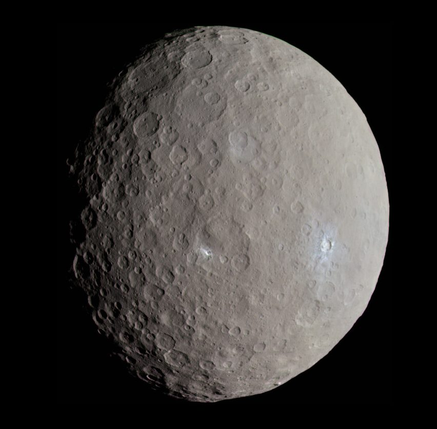

Plutón y los planetas enanos
Plutón, Ceres, Eris, Haumea y Makemake: mundos redondos que no llegan a planetas, y el cinturón de Kuiper donde viven casi todos.


Durante 76 años, Plutón fue el noveno planeta. En 2006 la Unión Astronómica Internacional definió por primera vez qué es un planeta, y Plutón quedó fuera. Desde entonces es un planeta enano, una categoría que comparte con al menos otros cuatro mundos.
¿Por qué Plutón ya no es un planeta?
Según la definición de 2006, un planeta debe cumplir tres condiciones:
- Girar alrededor del Sol.
- Tener masa suficiente para que su gravedad lo haga casi redondo.
- Haber «limpiado» su órbita de otros objetos de tamaño parecido.
Plutón cumple las dos primeras, pero no la tercera: comparte su zona con miles de cuerpos del cinturón de Kuiper. El detonante fue el descubrimiento de Eris en 2005, un mundo de tamaño casi idéntico. O se aceptaba un décimo planeta, y probablemente muchos más, o había que crear una nueva categoría.
Plutón, de cerca
Cuando la sonda New Horizons pasó junto a Plutón el 14 de julio de 2015, después de nueve años de viaje, descubrió un mundo mucho más vivo de lo esperado. Su rasgo más famoso es un enorme corazón blanco, la región Tombaugh, cuya mitad izquierda es un glaciar de nitrógeno helado llamado Sputnik Planitia. También tiene montañas de hielo de agua de 3.500 metros, una atmósfera fina con capas de neblina azul y quizá un océano bajo la superficie.
Su luna Caronte es tan grande, la mitad de Plutón, que ambos giran alrededor de un punto situado entre los dos. Siempre se muestran la misma cara mutuamente.
Los cinco reconocidos
| Planeta enano | Dónde está | Diámetro | Descubierto |
|---|---|---|---|
| Ceres | Cinturón de asteroides | 940 km | 1801 |
| Plutón | Cinturón de Kuiper | 2.377 km | 1930 |
| Haumea | Cinturón de Kuiper | ≈ 1.600 km (alargado) | 2004 |
| Makemake | Cinturón de Kuiper | ≈ 1.430 km | 2005 |
| Eris | Disco disperso | 2.326 km | 2005 |

_(cropped).jpg){kind=link}
Ceres, el más cercano
Ceres fue el primer objeto descubierto en el cinturón de asteroides, por el italiano Giuseppe Piazzi el 1 de enero de 1801. Durante medio siglo se le consideró un planeta. La sonda Dawn lo orbitó entre 2015 y 2018 y encontró manchas brillantes de sal en el cráter Occator, restos de agua salada que subió desde el interior.
El cinturón de Kuiper
Más allá de Neptuno, entre 30 y 50 veces la distancia de la Tierra al Sol, se extiende un anillo de cuerpos helados restos de la formación del sistema solar. Además de los planetas enanos, allí está Arrokoth, el objeto más lejano visitado por una nave: New Horizons pasó junto a él el 1 de enero de 2019. Es una especie de muñeco de nieve formado por dos bolas que se unieron suavemente.


Vídeos para entenderlo mejor
- Plutón: ¿Por qué NO es un Planeta?QuantumFracture · 2,1 M visualizaciones
- El descubrimiento que condenó a PlutónAstrum Español · 615 mil visualizaciones
Los vídeos son de YouTube y de sus autores. Se cargan solo al pulsar sobre ellos. Ver todos los vídeos →